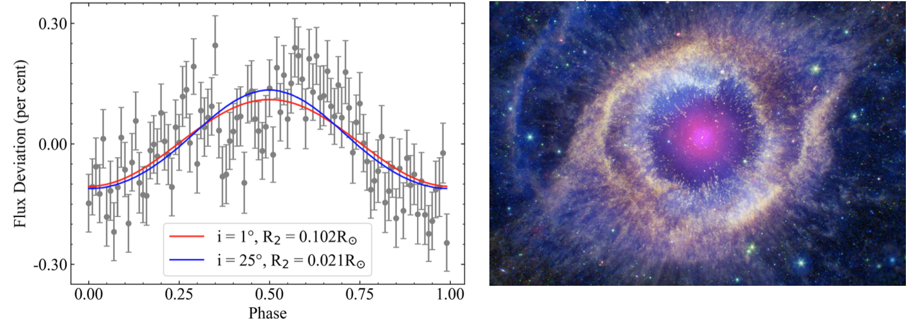

Welcome TESS followers to our latest news bulletin!
This week, we are looking at three recent papers from the archive. Enjoy!
Architecture of TOI-561 planetary system (Piotto et al. 2024) :
TOI-561 is a metal-poor thick-disk star with an age of about 11 Gyr – one of the oldest stars in the Galaxy with a known planetary system. Previous efforts to characterize it resulted in two different solutions for the orbital configuration of the system, the number of planets it contains, and their corresponding masses. Piotto et al. (2024) present a comprehensive new analysis of the system based on TESS and CHEOPS data. TESS observed TOI-561 in Sectors 8, 35, 45, 46, and 72; CHEOPS observed the system four times between 2021-01-23 and 2021-02-08, covering the planetary transits. To model the system, the authors combined the available photometry with 183 archival radial velocity measurements from HARPS-N and HIRES, assuming it consists of four transiting planets and one non-transiting. This allowed Piotto et al. (2024) to confirm the architecture of the system, refine the orbital and physical properties of its constituents, and improve the corresponding ephemeris. The authors argue that the latter is particularly notable for the mini-Neptune TOI-561 e, the newly-confirmed outermost transiting planet, where the ephemeris uncertainty has been reduced by 99.9%. Piotto et al. (2024) found that TOI-561 e has a radius R ~ 2.5 REarth, mass M ~ 12.4 MEarth, and equilibrium temperature of about 414 K, and note that TOI-561 b, the innermost transiting planet, is one of the lowest-density ultra-short period super-Earth (period ~ 0.45 days, density ~ 4.3 g/cm3). Their best-fit solution shows that the parent star has a mass of 0.81 MSun and radius of 0.84 RSun. Additionally, to demonstrate the long-term stability of the system, the authors performed N-body numerical integrations covering 10,000 years. Thanks to TESS, Piotto et al. (2024) were able to confirm the architecture of the TOI-561 multiplanet system, and refine the orbital and physical parameters of the five constituent planets.
A catalog of binary stars from phase modulation in the first four years of TESS Mission photometry (Dholakia et al. 2024) :
Delta Scuti stars are a class of young pulsating variable stars that lie on or near the main sequence, typically with spectral types A or F. These stars exhibit coherent brightness variations on typical timescales of hours that can be used to probe for the presence of unresolved companions. Dholakia et al. (2024) present a detailed search for such companions utilizing TESS data of short–period delta Scuti pulsators with Teff between 6,000 K and 10,000 K. TESS observed the targets at short-cadence during the first four years of the mission; to ensure sufficient orbital phase coverage, the authors included in their sample only targets observed in 7 or more sectors. Additionally, to ensure the selected targets are not eclipsing binaries instead of delta Scuti variables, the authors visually inspected and classified 500 randomly-selected stars. Out of the 18,285 stars falling within the above-mentioned criteria, Dholakia et al. (2024) selected 1,166 delta Scuti pulsators, with a peak in the effective temperature distribution near 7,500 K. In order to detect regular, repeating lightcurve modulations, Dholakia et al. (2024) employed a Lomb-Scargle periodogram analysis, constraining the frequency range between 10 and 70 cycles per day, and considering a peak significant only if it exceeds the periodogram's average by at least 20 standard deviations. Among the sample of 1,166 targets, the authors detected 53 binary systems and constrained orbital and physical parameters for 24 systems, all residing in the Galactic thin disk. Combining the pulsation timing measured from TESS with Hipparcos astrometry, Dholakia et al. (2024) uncover, for the first time, the companion’s orbit around alpha Pictoris – the brightest star in their sample – and measure its orbital period (1316 days), eccentricity (0.29), and mass (1.05 MSun). Capitalizing on TESS data, the authors demonstrate the binary nature of 53 delta Scuti stars, and constrain the orbital parameters and mass functions of 24 systems.
Novel Constraints on Companions to the Helix Nebula Central Star (Iskandarli et al. 2024) :
Planetary nebulae are a brief but important part of the life cycle of intermediate-mass stars, as well as one of the most spectacular astrophysical phenomena. A particularly notable example is the Helix Nebula (NGC 7293), one of the nearest (distance of ~200 pc) and most extensively studied systems, with a DAO-type central star of Teff = 120,000 K, M = 0.68 MSun and R = 0.025 RSun. Iskandarli et al. (2024) present a comprehensive new investigation of this valuable planetary nebulae for our general understanding of the nature and evolution of these systems. TESS observed the system at short-cadence in Sectors 2, 28, and 42, and enabled the detection of clear periodicity at 2.77 days, suggesting an unresolved companion responsible for the modulations. Previous work tested for the presence of this companion in the mass range between 0.16 MSun and 2.5 MSun. Iskandarli et al. (2024) combine the TESS photometry with GALEX, Pan-STARRS, 2MASS, and Spitzer data to extend these tests down to the planetary-mass regime. The authors improve the ephemeris of the periodic signal, and utilize lightcurve and SED modeling to rule out stellar-mass irradiated companions. Based on the available data, Iskandarli et al. (2024) find two potential solutions – a Jovian-sized body of R = 0.1 RSun orbiting the central star with a nearly face-on inclination, or a terrestrial sized body of R = 0.02 RSun aligned with the inclination of the Helix Nebula. The authors further argue that the former scenario would result in a near-infrared excess that is not detected, while the exoplanet companion in the latter scenario would effectively remain undetected in both the available photometry and potential follow-up radial velocity measurements. Additionally, Iskandarli et al. (2024) rule out the presence of ultracool dwarf companions within 1,200 AU of the central star, and note that the ~2.8-days modulations can be due to starspots instead of orbiting companions. Thanks to TESS, Iskandarli et al. (2024) obtained important new insight into the Helix Nebula, one of the nearest planetary nebulae, and ruled out potential stellar companions responsible for periodic modulations detected in the lightcurve.

Fig. 1: Taken from Piotto et al. (2024). Mid-transit time uncertainties for the four transiting planets in the TOI-561 multiplanet system, propagated through 1 Jan 2030. The last panel is zoomed-in to highlight the improvement.
 )
)
Fig. 2: Taken from Dholakia et al. (2024). Left: phase modulations of alpha Pictoris observed by TESS, along with the best-fit MCMC model. Right: corresponding Hipparcos astrometry.

Fig. 3: Taken from Iskandarli et al. (2024). Left: Phase-folded TESS data (grey) compared to lightcurve and SED models (red and blue) for the Helix Nebula. The two models correspond to two different companions, as labeled. Right: Composite image of the Helix Nebula (Image credit: X-ray: NASA/CXC; Ultraviolet: NASA/JPL-Caltech/SSC; Optical: NASA/STScI(M. Meixner)/ESA/NRAO(T.A. Rector); Infrared: NASA/JPL-Caltech/K. Su)